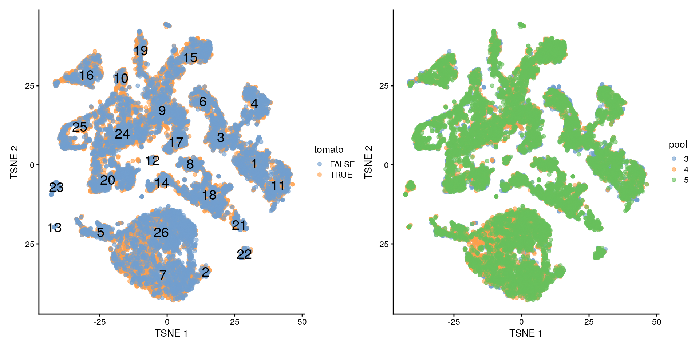

12 Análisis de expresión diferencial
Instructor: Leonardo Collado Torres
## Paquetes de este capítulo
library("MouseGastrulationData") ## para descargar datos de ejemplo
library("scater") ## para gráficas y control de calidad
library("scran") ## para selección de genes, clustering, etc
library("batchelor") ## para métodos de correción de batch (lote)
library("patchwork") ## para agrupar gráficas
library("Polychrome") ## para muchos colores
library("bluster") ## métodos de clustering
library("edgeR") ## para expresión diferencial12.1 Diapositivas de Peter Hickey
Ve las diapositivas aquí
Esas diapositivas están basadas en este capítulo de OSCA. El libro de OSCA tiene algunas partes más actualizadas de lo que vienen en las diapositivas.
12.2 Motivación
- 👉 scRNA-seq nos puede ayudar a estudiar cambios en composición (cambios en proporciones de células) o cambios en niveles de expresión de genes entre varias condiciones biológicas
- El primero se llama cambios de abundancia,
- Ejemplo: después de un tratamiento con una droga
- Ejemplo: después de modificaciones genéticas
- 👉 Nos permite obtener mayor resolución biológica que experimentos convencionales de RNA-seq, sobre todo si podemos asociar cambios en poblaciones celulares a manipulaciones experimentales
12.2.1 Dos categorías de análisis
- 👉 Análisis de expresión diferencial
- Buscamos cambios en niveles de expresión entre condiciones para células del mismo tipo que están presentes en todas las condiciones
- 👉 Análisis de abundancia diferencial
- Buscamos cambios en la composición de los tipos celulares entre condiciones
- Podría ser entre estados celulares en vez de tipos celulares
Son dos lados de la misma moneda
| gene | condición | celula | expresión |
|---|---|---|---|
| gene1 | grupo1 | celula1 | 13.31 |
| gene1 | grupo2 | celula1 | 6.15 |
| gene2 | grupo1 | celula1 | 9.67 |
| gene2 | grupo2 | celula1 | 11.53 |
| gene1 | grupo1 | celula2 | 10.89 |
| gene1 | grupo2 | celula2 | 7.65 |
| gene2 | grupo1 | celula2 | 10.97 |
| gene2 | grupo2 | celula2 | 9.37 |
| condición | celula | frecuencia |
|---|---|---|
| grupo1 | celula1 | 47 |
| grupo2 | celula1 | 32 |
| grupo1 | celula2 | 39 |
| grupo2 | celula2 | 43 |
12.3 Datos de ejemplo
Embriones de ratón quiméricos.
Chimeric E8.5 mouse embryos - td-Tomato+ ESCs injected into WT blastocyst - No genetic differences between the injected and background cells (except expression of td-Tomato in the former) 3 replicate batches - Each batch contains td-Tomato+ and td-Tomato- cells sorted from a single pool of dissociated cells from 6-7 chimeric embryos - 2,000 - 7,000 cells/sample using 10X Genomics Aim is to determine whether the injection procedure itself introduces differences in lineage commitment compared to the background cells
https://bioconductor.org/books/release/OSCA/pijuan-sala-chimeric-mouse-embryo-10x-genomics.html
Pijuan-Sala, B. et al. A single-cell molecular map of mouse gastrulation and early organogenesis. Nature 566, 490–495 (2019).
12.3.1 Descarguemos los datos de ejemplo
#--- loading ---#
library("MouseGastrulationData")
sce.chimera <- WTChimeraData(samples = 5:10)## snapshotDate(): 2021-05-18## see ?MouseGastrulationData and browseVignettes('MouseGastrulationData') for documentation## downloading 1 resources## retrieving 1 resource## loading from cache## see ?MouseGastrulationData and browseVignettes('MouseGastrulationData') for documentation## downloading 1 resources## retrieving 1 resource## loading from cache## see ?MouseGastrulationData and browseVignettes('MouseGastrulationData') for documentation## downloading 1 resources## retrieving 1 resource## loading from cache## see ?MouseGastrulationData and browseVignettes('MouseGastrulationData') for documentation## downloading 1 resources## retrieving 1 resource## loading from cache## see ?MouseGastrulationData and browseVignettes('MouseGastrulationData') for documentation## downloading 1 resources## retrieving 1 resource## loading from cache## see ?MouseGastrulationData and browseVignettes('MouseGastrulationData') for documentation## downloading 1 resources## retrieving 1 resource## loading from cache## see ?MouseGastrulationData and browseVignettes('MouseGastrulationData') for documentation## downloading 1 resources## retrieving 1 resource## loading from cache## see ?MouseGastrulationData and browseVignettes('MouseGastrulationData') for documentation## downloading 1 resources## retrieving 1 resource## loading from cache## see ?MouseGastrulationData and browseVignettes('MouseGastrulationData') for documentation## downloading 1 resources## retrieving 1 resource## loading from cache## see ?MouseGastrulationData and browseVignettes('MouseGastrulationData') for documentation## downloading 1 resources## retrieving 1 resource## loading from cache## see ?MouseGastrulationData and browseVignettes('MouseGastrulationData') for documentation## downloading 1 resources## retrieving 1 resource## loading from cache## see ?MouseGastrulationData and browseVignettes('MouseGastrulationData') for documentation## downloading 1 resources## retrieving 1 resource## loading from cache## see ?MouseGastrulationData and browseVignettes('MouseGastrulationData') for documentation## downloading 1 resources## retrieving 1 resource## loading from cache## see ?MouseGastrulationData and browseVignettes('MouseGastrulationData') for documentation## downloading 1 resources## retrieving 1 resource## loading from cache## see ?MouseGastrulationData and browseVignettes('MouseGastrulationData') for documentation## downloading 1 resources## retrieving 1 resource## loading from cache## see ?MouseGastrulationData and browseVignettes('MouseGastrulationData') for documentation## downloading 1 resources## retrieving 1 resource## loading from cache## see ?MouseGastrulationData and browseVignettes('MouseGastrulationData') for documentation## downloading 1 resources## retrieving 1 resource## loading from cache## see ?MouseGastrulationData and browseVignettes('MouseGastrulationData') for documentation## downloading 1 resources## retrieving 1 resource## loading from cache## see ?MouseGastrulationData and browseVignettes('MouseGastrulationData') for documentation## downloading 1 resources## retrieving 1 resource## loading from cache## see ?MouseGastrulationData and browseVignettes('MouseGastrulationData') for documentation## downloading 1 resources## retrieving 1 resource## loading from cache## see ?MouseGastrulationData and browseVignettes('MouseGastrulationData') for documentation## downloading 1 resources## retrieving 1 resource## loading from cache## see ?MouseGastrulationData and browseVignettes('MouseGastrulationData') for documentation## downloading 1 resources## retrieving 1 resource## loading from cache## see ?MouseGastrulationData and browseVignettes('MouseGastrulationData') for documentation## downloading 1 resources## retrieving 1 resource## loading from cache## see ?MouseGastrulationData and browseVignettes('MouseGastrulationData') for documentation## downloading 1 resources## retrieving 1 resource## loading from cache## see ?MouseGastrulationData and browseVignettes('MouseGastrulationData') for documentation## downloading 1 resources## retrieving 1 resource## loading from cachesce.chimera## class: SingleCellExperiment
## dim: 29453 20935
## metadata(0):
## assays(1): counts
## rownames(29453): ENSMUSG00000051951 ENSMUSG00000089699 ...
## ENSMUSG00000095742 tomato-td
## rowData names(2): ENSEMBL SYMBOL
## colnames(20935): cell_9769 cell_9770 ... cell_30702 cell_30703
## colData names(11): cell barcode ... doub.density sizeFactor
## reducedDimNames(2): pca.corrected.E7.5 pca.corrected.E8.5
## mainExpName: NULL
## altExpNames(0):## Exploremos los datos
sapply(colData(sce.chimera)[, -(1:2)], function(x) {
x <- if (is.character(x) || is.integer(x)) factor(x) else x
summary(x)
})## $sample
## 5 6 7 8 9 10
## 2411 1047 3007 3097 4544 6829
##
## $stage
## E8.5
## 20935
##
## $tomato
## Mode FALSE TRUE
## logical 10973 9962
##
## $pool
## 3 4 5
## 3458 6104 11373
##
## $stage.mapped
## E7.0 E7.25 E7.5 E7.75 E8.0 E8.25 E8.5
## 55 39 255 1224 1641 6998 10723
##
## $celltype.mapped
## Allantois Blood progenitors 1
## 955 56
## Blood progenitors 2 Cardiomyocytes
## 245 601
## Caudal epiblast Caudal Mesoderm
## 71 71
## Caudal neurectoderm Def. endoderm
## 19 91
## Doublet Endothelium
## 1509 350
## Erythroid1 Erythroid2
## 448 1115
## Erythroid3 ExE ectoderm
## 3173 156
## ExE endoderm ExE mesoderm
## 14 1003
## Forebrain/Midbrain/Hindbrain Gut
## 1803 701
## Haematoendothelial progenitors Intermediate mesoderm
## 518 397
## Mesenchyme Mixed mesoderm
## 1495 4
## Neural crest NMP
## 615 606
## Notochord Paraxial mesoderm
## 11 1059
## Parietal endoderm PGC
## 61 25
## Pharyngeal mesoderm Rostral neurectoderm
## 1109 198
## Somitic mesoderm Spinal cord
## 328 713
## Stripped Surface ectoderm
## 47 1357
## Visceral endoderm
## 11
##
## $closest.cell
## cell_71220 cell_132352 cell_37581 cell_38398 cell_133630 cell_75985
## 180 179 135 123 102 78
## cell_74615 cell_96860 cell_134438 cell_38140 cell_36067 cell_98277
## 76 72 59 59 54 51
## cell_40210 cell_133739 cell_69452 cell_137250 cell_40746 cell_74744
## 46 43 42 41 41 40
## cell_37295 cell_139027 cell_76775 cell_98128 cell_97456 cell_132412
## 39 38 37 37 36 34
## cell_69071 cell_70906 cell_133892 cell_40183 cell_132070 cell_133063
## 34 34 33 32 30 30
## cell_133712 cell_38655 cell_40388 cell_131552 cell_39059 cell_66392
## 28 27 27 26 26 25
## cell_66974 cell_102032 cell_131092 cell_67212 cell_98050 cell_39343
## 25 24 24 24 24 23
## cell_40527 cell_74684 cell_100899 cell_130659 cell_133721 cell_134638
## 23 23 22 22 22 22
## cell_38244 cell_39903 cell_70218 cell_76927 cell_137879 cell_27132
## 22 22 22 22 21 21
## cell_65563 cell_101969 cell_38451 cell_40571 cell_91221 cell_125957
## 21 20 20 20 20 19
## cell_40143 cell_40412 cell_65386 cell_66720 cell_70671 cell_96014
## 19 19 19 19 19 19
## cell_97435 cell_131123 cell_133876 cell_134544 cell_136737 cell_138771
## 19 18 18 18 18 18
## cell_65700 cell_70110 cell_72521 cell_102689 cell_132918 cell_133005
## 18 18 18 17 17 17
## cell_133481 cell_37978 cell_38407 cell_65580 cell_134191 cell_136502
## 17 17 17 17 16 16
## cell_25052 cell_40387 cell_40844 cell_71754 cell_74962 cell_76390
## 16 16 16 16 16 16
## cell_96412 cell_96512 cell_96673 cell_98024 cell_99878 cell_101054
## 16 16 16 16 16 15
## cell_102334 cell_102822 cell_103120 (Other)
## 15 15 15 17749
##
## $doub.density
## Min. 1st Qu. Median Mean 3rd Qu. Max.
## 0.00000 0.00294 0.02468 0.14791 0.09480 43.64080
##
## $sizeFactor
## Min. 1st Qu. Median Mean 3rd Qu. Max.
## 0.1199 0.5500 0.7545 0.9091 1.1114 5.4110Básicamente:
sample: 6 ratones diferentestomato: inyectados o no con td-Tomatopool: lote de secuenciación, cada lote con 1 con y otro sin inyeccióncelltype.mappped: 34 tipos de células anotados
## Número de células en nuestras variables principales
with(colData(sce.chimera), table(sample, pool, tomato))## , , tomato = FALSE
##
## pool
## sample 3 4 5
## 5 0 0 0
## 6 1047 0 0
## 7 0 0 0
## 8 0 3097 0
## 9 0 0 0
## 10 0 0 6829
##
## , , tomato = TRUE
##
## pool
## sample 3 4 5
## 5 2411 0 0
## 6 0 0 0
## 7 0 3007 0
## 8 0 0 0
## 9 0 0 4544
## 10 0 0 0## Número de tipos celulares
length(unique(sce.chimera$celltype.mapped))## [1] 3512.3.2 Procesamiento
Usaremos los métodos que ya vimos para procesar datos
Usaremos
batchelorporque tenemos muestras de 3 lotes de muestras y queremos eliminar diferencias entre los lotesPara más detalles, revisar https://bioconductor.org/books/release/OSCA/integrating-datasets.html
#--- feature-annotation ---#
library("scater")
rownames(sce.chimera) <- uniquifyFeatureNames(
rowData(sce.chimera)$ENSEMBL, rowData(sce.chimera)$SYMBOL
)
#--- quality-control ---#
drop <- sce.chimera$celltype.mapped %in% c("stripped", "Doublet")
sce.chimera <- sce.chimera[, !drop]
#--- normalization ---#
sce.chimera <- logNormCounts(sce.chimera)
#--- variance-modelling ---#
library("scran")
dec.chimera <- modelGeneVar(sce.chimera, block = sce.chimera$sample)
chosen.hvgs <- dec.chimera$bio > 0
#--- merging ---#
library("batchelor")
set.seed(01001001)
merged <- correctExperiments(sce.chimera,
batch = sce.chimera$sample,
subset.row = chosen.hvgs,
PARAM = FastMnnParam(
merge.order = list(
list(1, 3, 5), # WT (3 replicates)
list(2, 4, 6) # td-Tomato (3 replicates)
)
)
)
#--- clustering ---#
g <- buildSNNGraph(merged, use.dimred = "corrected")
clusters <- igraph::cluster_louvain(g)
colLabels(merged) <- factor(clusters$membership)
#--- dimensionality-reduction ---#
merged <- runTSNE(merged, dimred = "corrected", external_neighbors = TRUE)
merged <- runUMAP(merged, dimred = "corrected", external_neighbors = TRUE)12.3.3 Exploremos los datos de ejemplo
Exploremos si tenemos clusters con una diferencia grande en el número de celulas entre las muestras sin y con inyecciones de td-Tomato
Exploremos el número de células en cada cluster a lo largo de los 3 lotes de secuenciación (batch)
## Clusters vs DE por td-Tomato
table(colLabels(merged), merged$tomato)##
## FALSE TRUE
## 1 546 401
## 2 60 52
## 3 470 398
## 4 469 211
## 5 335 271
## 6 258 249
## 7 1241 967
## 8 203 221
## 9 630 629
## 10 71 181
## 11 417 310
## 12 47 57
## 13 58 0
## 14 209 214
## 15 414 630
## 16 363 509
## 17 234 198
## 18 657 607
## 19 151 303
## 20 579 443
## 21 137 74
## 22 82 78
## 23 155 1
## 24 762 878
## 25 363 497
## 26 1420 716## Clusters vs lotes de muestras (batch)
table(colLabels(merged), merged$pool)##
## 3 4 5
## 1 224 173 550
## 2 26 30 56
## 3 226 172 470
## 4 78 162 440
## 5 99 227 280
## 6 187 116 204
## 7 300 909 999
## 8 69 134 221
## 9 229 423 607
## 10 114 54 84
## 11 179 169 379
## 12 16 31 57
## 13 2 51 5
## 14 77 97 249
## 15 114 289 641
## 16 183 242 447
## 17 157 81 194
## 18 123 308 833
## 19 106 118 230
## 20 236 238 548
## 21 3 10 198
## 22 27 29 104
## 23 6 84 66
## 24 217 455 968
## 25 132 172 556
## 26 194 870 1072- Visualizaremos nuestros clusters que son 26 en dimensiones reducidas de t-SNE
- Queremos que todos los clusters tengan muestras de cada lote de secuenciación (batch). Detalles en OSCA
- Vemos que no parece que haya mucha señal en base a td-Tomato
library("patchwork")
plotTSNE(merged, colour_by = "tomato", text_by = "label") +
plotTSNE(merged, colour_by = data.frame(pool = factor(merged$pool)))
12.3.4 Nuestros clusters vs los originales
Las siguientes gráficas nos ayudan a comparar nuestros clusters vs los que encontraron en el estudio original
¿Les parecen similares?
## Definir colores, si no scater nos los pone en una escala
## continua
cols_label <- Polychrome::palette36.colors(length(unique(merged$label)))
names(cols_label) <- unique(merged$label)
cols_celltype.mapped <- Polychrome::palette36.colors(length(unique(merged$celltype.mapped)))
names(cols_celltype.mapped) <- unique(merged$celltype.mapped)
## Nuestros clusters vs anotación de células por los
## autores originales
plotTSNE(merged, colour_by = "label", text_by = "label") +
theme(legend.position = "none") +
scale_colour_manual(values = cols_label) +
plotTSNE(merged, colour_by = "celltype.mapped") +
theme(legend.position = "none") +
scale_colour_manual(values = cols_celltype.mapped)## Scale for 'colour' is already present. Adding another scale for 'colour',
## which will replace the existing scale.
## Scale for 'colour' is already present. Adding another scale for 'colour',
## which will replace the existing scale.
Es difícil el proceso de comparar clusters
Podemos usar
blusterpara evaluar númericamente que tanto se parecen los clusters. Entre más cerca de 1, mejor enpairwiseRand()También podemos hacer un heatmap
library("bluster")
pairwiseRand(colLabels(merged), merged$celltype.mapped, "index")## [1] 0.5513742by.label <- table(colLabels(merged), merged$celltype.mapped)
pheatmap::pheatmap(log2(by.label + 1), color = viridis::viridis(101))
Por eso es más fácil combinar datos de varios lotes de secuenciación y hacer un solo clustering en vez de varios y tener que identificar que clusters de una muestra corresponden a los de otra
⚠️ Nos saltaremos el proceso de anotación de células y usaremos los clusters y etiquetas originales
12.4 Análisis de expresión diferencial
En RNA-seq estamos acostumbrados a evaluar si hay diferencias en los niveles de expresión de genes entre condiciones, así que es natural que lo hagamos con scRNA-seq también
🤔 Pero los datos de scRNA-seq tienen muchos ceros
12.4.1 Pseudo-bulking
El proceso de pseudo-bulking es un truco que nos permite usar métodos de bulk RNA-seq para analizar nuestros datos de scRNA-seq
Cómo tenemos muchas células de cada condición, para cada gene podemos sumar los niveles de expresión entre todas las células de esa condición
🔥off the press! 👀 our @biorxivpreprint on human 🧠brain @LieberInstitute spatial 🌌🔬transcriptomics data 🧬using Visium @10xGenomics🎉#spatialLIBD
— 🇲🇽 Leonardo Collado-Torres (@lcolladotor) February 29, 2020
🔍https://t.co/RTW0VscUKR
👩🏾💻https://t.co/bsg04XKONr
📚https://t.co/FJDOOzrAJ6
📦https://t.co/Au5jwADGhYhttps://t.co/PiWEDN9q2N pic.twitter.com/aWy0yLlR50
- Ejemplo de mi trabajo:
- 12 muestras
- 7 regiones
- 47,681 spots (digamos que células)
Podemos comprimir la información a una matriz de 12 * 7 = 84 columnas
Nos quedamos con pocas réplicas para nuestro análisis, pero justamente los métodos de bulk RNA-seq están diseñados para esos escenarios (claro, entre más datos mejor!!!)
Acá pueden explorar los datos si quieren http://spatial.libd.org/spatialLIBD/
Estas diapositivas son parte de un webinar que di con Kristen R Maynard el 2021-04-27 para BioTuring que pueden ver desde su sitio web o en YouTube.
- Podemos hacerlo manualmente o de forma más sencilla con la función
aggregateAcrossCells()
# Using 'label' and 'sample' as our two factors; each column of the output
# corresponds to one unique combination of these two factors.
summed <- aggregateAcrossCells(merged,
id = colData(merged)[, c("celltype.mapped", "sample")]
)
summed## class: SingleCellExperiment
## dim: 14699 186
## metadata(2): merge.info pca.info
## assays(1): counts
## rownames(14699): Xkr4 Rp1 ... Vmn2r122 CAAA01147332.1
## rowData names(3): rotation ENSEMBL SYMBOL
## colnames: NULL
## colData names(16): batch cell ... sample ncells
## reducedDimNames(5): corrected pca.corrected.E7.5 pca.corrected.E8.5
## TSNE UMAP
## mainExpName: NULL
## altExpNames(0):dim(merged)## [1] 14699 19426dim(summed)## [1] 14699 186with(colData(merged), length(unique(celltype.mapped)) * length(unique(sample)))## [1] 204En teoría podríamos tener más columnas, pero no las tenemos todas porque no tenemos datos para todas las combinaciones
Esto puede afectar nuestro análisis, y pues afecta cuantas variables podremos usar para ajustar
- Por ejemplo, si agregamos sexo con 2 opciones, duplicaríamos el número teórico de columnas pero tal vez no tengamos suficientes datos
- Si lo llevas al extremo, terminas con los mismos datos que con los que empezamos
12.4.2 Convertir a un objeto nuevo
Hagamos nuestro análisis de expresión diferencial
Empezaremos con solo un tipo celular:
Mesenchyme
label <- "Mesenchyme"
current <- summed[, label == summed$celltype.mapped]
dim(current)## [1] 14699 6- Vemos que nos quedamos con solo 14,699 genes a lo largo de 6 muestras
- Esto sería un experimento pequeño de bulk RNA-seq
- Usaremos
edgeRde Robinson, McCarthy e Smyth, Bioinformatics, 2010 que es uno de los paquetes más usados para análisis de expresión diferencial en bulk RNA-seq- Aaron Lun, autor de OSCA, fue formado por el mismo grupo en Australia
# Creating up a DGEList object for use in edgeR:
library("edgeR")
y <- DGEList(counts(current), samples = colData(current))
y## An object of class "DGEList"
## $counts
## Sample1 Sample2 Sample3 Sample4 Sample5 Sample6
## Xkr4 2 0 0 0 3 0
## Rp1 0 0 1 0 0 0
## Sox17 7 0 3 0 14 9
## Mrpl15 1420 271 1009 379 1578 749
## Rgs20 3 0 1 1 0 0
## 14694 more rows ...
##
## $samples
## group lib.size norm.factors batch cell barcode sample stage tomato pool
## Sample1 1 4607053 1 5 <NA> <NA> 5 E8.5 TRUE 3
## Sample2 1 1064970 1 6 <NA> <NA> 6 E8.5 FALSE 3
## Sample3 1 2494010 1 7 <NA> <NA> 7 E8.5 TRUE 4
## Sample4 1 1028668 1 8 <NA> <NA> 8 E8.5 FALSE 4
## Sample5 1 4290221 1 9 <NA> <NA> 9 E8.5 TRUE 5
## Sample6 1 1950840 1 10 <NA> <NA> 10 E8.5 FALSE 5
## stage.mapped celltype.mapped closest.cell doub.density sizeFactor label
## Sample1 <NA> Mesenchyme <NA> NA NA <NA>
## Sample2 <NA> Mesenchyme <NA> NA NA <NA>
## Sample3 <NA> Mesenchyme <NA> NA NA <NA>
## Sample4 <NA> Mesenchyme <NA> NA NA <NA>
## Sample5 <NA> Mesenchyme <NA> NA NA <NA>
## Sample6 <NA> Mesenchyme <NA> NA NA <NA>
## celltype.mapped.1 sample.1 ncells
## Sample1 Mesenchyme 5 286
## Sample2 Mesenchyme 6 55
## Sample3 Mesenchyme 7 243
## Sample4 Mesenchyme 8 134
## Sample5 Mesenchyme 9 478
## Sample6 Mesenchyme 10 299- Listo, ya convertimos nuestros datos al formato que le gusta a
edgeR
12.4.3 Pre-procesamiento
- Antes de poder continuar, vamos a eliminar muestras que construimos con el proceso de pseudo-bulking que no tengan al menos 10 células
discarded <- current$ncells < 10
y <- y[, !discarded]
summary(discarded)## Mode FALSE
## logical 6- A continuación eliminaremos genes que tengan bajos nivels de expresión
keep <- filterByExpr(y, group = current$tomato)
y <- y[keep, ]
summary(keep)## Mode FALSE TRUE
## logical 9011 5688- Después normalizaremos los datos
- Pero si ya habíamos normalizado los datos de scRNA-seq, ¿qué pasó? 23
y <- calcNormFactors(y)
y$samples## group lib.size norm.factors batch cell barcode sample stage tomato pool
## Sample1 1 4607053 1.0683392 5 <NA> <NA> 5 E8.5 TRUE 3
## Sample2 1 1064970 1.0487418 6 <NA> <NA> 6 E8.5 FALSE 3
## Sample3 1 2494010 0.9582296 7 <NA> <NA> 7 E8.5 TRUE 4
## Sample4 1 1028668 0.9774156 8 <NA> <NA> 8 E8.5 FALSE 4
## Sample5 1 4290221 0.9707300 9 <NA> <NA> 9 E8.5 TRUE 5
## Sample6 1 1950840 0.9816914 10 <NA> <NA> 10 E8.5 FALSE 5
## stage.mapped celltype.mapped closest.cell doub.density sizeFactor label
## Sample1 <NA> Mesenchyme <NA> NA NA <NA>
## Sample2 <NA> Mesenchyme <NA> NA NA <NA>
## Sample3 <NA> Mesenchyme <NA> NA NA <NA>
## Sample4 <NA> Mesenchyme <NA> NA NA <NA>
## Sample5 <NA> Mesenchyme <NA> NA NA <NA>
## Sample6 <NA> Mesenchyme <NA> NA NA <NA>
## celltype.mapped.1 sample.1 ncells
## Sample1 Mesenchyme 5 286
## Sample2 Mesenchyme 6 55
## Sample3 Mesenchyme 7 243
## Sample4 Mesenchyme 8 134
## Sample5 Mesenchyme 9 478
## Sample6 Mesenchyme 10 299calcNormFactors()asume que la mayoría de los genes no están diferencialmente expresados como describen Robinson y Oshlack, Genome Biol., 2010Podemos visualizar los cambios de expresión para todos los genes, una muestra a la vez
par(mfrow = c(2, 3))
for (i in seq_len(ncol(y))) {
plotMD(y, column = i)
}
- Podemos usar técnicas de reducción de dimensiones como
MDSyPCApara explorar la variación entre nuestras muestras (ya no células)
par(mfrow = c(1, 1))
plotMDS(cpm(y, log = TRUE),
col = ifelse(y$samples$tomato, "red", "blue")
)
12.4.4 Modelo estadístico
Si todo nos parece bien, podemos seguir con definir nuestro modelo estadístico
Vamos a ajustar por lote (batch) y encontrar diferencias por la inyección de td-Tomato
- Como empezamos con las cuentas desde cero, tenemos que tomar en cuenta la variación por lote de secuenciación
design <- model.matrix(~ factor(pool) + factor(tomato), y$samples)
design## (Intercept) factor(pool)4 factor(pool)5 factor(tomato)TRUE
## Sample1 1 0 0 1
## Sample2 1 0 0 0
## Sample3 1 1 0 1
## Sample4 1 1 0 0
## Sample5 1 0 1 1
## Sample6 1 0 1 0
## attr(,"assign")
## [1] 0 1 1 2
## attr(,"contrasts")
## attr(,"contrasts")$`factor(pool)`
## [1] "contr.treatment"
##
## attr(,"contrasts")$`factor(tomato)`
## [1] "contr.treatment"- Si queremos explorar nuestro modelo estadístico de forma interactiva, podemos usar
ExploreModelMatrixpor Charlotte Soneson y Michael Love. Charlotte es de las autoras deiSEE.
if (interactive()) {
ExploreModelMatrix::ExploreModelMatrix(y$samples[, c("pool", "tomato")], ~ factor(pool) + factor(tomato))
}- Tal y como en bulk RNA-seq, podemos usar la información de los genes para mejorar nuestros estimados de la varianza para cada gene, de tal forma que mejoramos los resultados estadísticos aunque tengamos pocas muestras
y <- estimateDisp(y, design)
summary(y$trended.dispersion)## Min. 1st Qu. Median Mean 3rd Qu. Max.
## 0.01026 0.01670 0.02128 0.02020 0.02349 0.02665plotBCV(y)fit <- glmQLFit(y, design, robust = TRUE)
summary(fit$var.prior)## Min. 1st Qu. Median Mean 3rd Qu. Max.
## 0.3179 0.7143 0.8538 0.8045 0.9128 1.0665summary(fit$df.prior)## Min. 1st Qu. Median Mean 3rd Qu. Max.
## 0.2267 12.6749 12.6749 12.3390 12.6749 12.6749plotQLDisp(fit)- Ahora si podemos correr nuestro modelo estádistico
res <- glmQLFTest(fit, coef = ncol(design))
summary(decideTests(res))## factor(tomato)TRUE
## Down 8
## NotSig 5672
## Up 8topTags(res)## Coefficient: factor(tomato)TRUE
## logFC logCPM F PValue FDR
## Phlda2 -4.3873546 9.934130 1638.59469 1.812293e-16 1.030832e-12
## Erdr1 2.0690698 8.832662 356.36590 1.060836e-11 3.017019e-08
## Mid1 1.5190728 6.931325 120.14656 1.844351e-08 3.496889e-05
## H13 -1.0596020 7.540121 80.79795 2.373001e-07 2.526790e-04
## Kcnq1ot1 1.3762700 7.241651 83.30701 2.392052e-07 2.526790e-04
## Akr1e1 -1.7205826 5.127802 79.31386 2.665390e-07 2.526790e-04
## Zdbf2 1.8008336 6.797367 83.66324 6.808994e-07 5.532794e-04
## Asb4 -0.9234911 7.340648 53.44578 2.918297e-06 2.074909e-03
## Impact 0.8516300 7.353208 50.31429 4.145416e-06 2.619903e-03
## Lum -0.6031413 9.274529 41.67104 1.204523e-05 6.851324e-03- Encontramos 32 y 48 genes diferencialmente expresados por la inyección de td-Tomato.
12.4.5 De forma sencilla
Eso fue mucho trabajo, ¿no?
La función
pseudoBulkDGE()corre todos esos pasos por nosotros
# Removing all pseudo-bulk samples with 'insufficient' cells.
summed.filt <- summed[, summed$ncells >= 10]
library("scran")
de.results <- pseudoBulkDGE(summed.filt,
label = summed.filt$celltype.mapped,
design = ~ factor(pool) + tomato,
coef = "tomatoTRUE",
condition = summed.filt$tomato
)
class(de.results)## [1] "SimpleList"
## attr(,"package")
## [1] "S4Vectors"length(de.results)## [1] 23Nos regresa una lista con los resultados para cada uno de nuestros tipos celulares
Podemos extraer los resultados para nuestro tipo celular de interés, por ejemplo Allantois.
cur.results <- de.results[["Allantois"]]
cur.results[order(cur.results$PValue), ]## DataFrame with 14699 rows and 5 columns
## logFC logCPM F PValue FDR
## <numeric> <numeric> <numeric> <numeric> <numeric>
## Phlda2 -2.489508 12.58150 1207.016 3.33486e-21 1.60507e-17
## Xist -7.978532 8.00166 1092.831 1.27783e-17 3.07510e-14
## Erdr1 1.947170 9.07321 296.937 1.58009e-14 2.53500e-11
## Slc22a18 -4.347153 4.04380 117.389 1.92517e-10 2.31647e-07
## Slc38a4 0.891849 10.24094 113.899 2.52208e-10 2.42776e-07
## ... ... ... ... ... ...
## Ccl27a_ENSMUSG00000095247 NA NA NA NA NA
## CR974586.5 NA NA NA NA NA
## AC132444.6 NA NA NA NA NA
## Vmn2r122 NA NA NA NA NA
## CAAA01147332.1 NA NA NA NA NAy.allantois <- metadata(cur.results)$y
plotBCV(y.allantois)
- También nos dice que tipos celulares fallaron porque no teníamos suficiente información para hacer el análisis
metadata(de.results)$failed## [1] "Blood progenitors 1" "Caudal epiblast" "Caudal neurectoderm"
## [4] "ExE ectoderm" "Parietal endoderm" "Stripped"- Aquí podemos hacer la misma gráfica que hicimos de forma manual para Mesenchyme.
cur.results.Mesenchyme <- de.results[["Mesenchyme"]]
y.Mesenchyme <- metadata(cur.results.Mesenchyme)$y
plotBCV(y.Mesenchyme)
12.5 Análisis de abundancia diferencial
table(merged$sample)##
## 5 6 7 8 9 10
## 2298 1026 2740 2904 4057 6401Si recuerdan, tenemos 6 muestras en total.
👉 Otro tipo de análisis que podemos hacer es preguntarnos si cambió la composición celular entre nuestras muestras con y sin la inyección de td-Tomato.
👉 Este tipo de análisis nos dirá que tipos celulares cambiaron de acuerdo a nuestras condiciones de interés, que puede ser igual de interesante que encontrar genes diferencialmente expresados.
👉 Es como si scRNA-seq fuera un super-FACS donde usamos todo el transcriptoma.
Hagamos una tabla de la frecuencia de cada tipo celular a lo largo de nuestras muestras. Es decir, una tabla de abundancias
abundances <- table(merged$celltype.mapped, merged$sample)
abundances <- unclass(abundances)
head(abundances)##
## 5 6 7 8 9 10
## Allantois 97 15 139 127 318 259
## Blood progenitors 1 6 3 16 6 8 17
## Blood progenitors 2 31 8 28 21 43 114
## Cardiomyocytes 85 21 79 31 174 211
## Caudal epiblast 2 2 0 0 22 45
## Caudal Mesoderm 10 10 9 3 10 29- A esta tabla le podemos agregar algo de información de nuestras muestras, y con eso construir un objeto del tipo que le gusta a
edgeR
# Attaching some column metadata.
extra.info <- colData(merged)[match(colnames(abundances), merged$sample), ]
y.ab <- DGEList(abundances, samples = extra.info)
y.ab## An object of class "DGEList"
## $counts
##
## 5 6 7 8 9 10
## Allantois 97 15 139 127 318 259
## Blood progenitors 1 6 3 16 6 8 17
## Blood progenitors 2 31 8 28 21 43 114
## Cardiomyocytes 85 21 79 31 174 211
## Caudal epiblast 2 2 0 0 22 45
## 29 more rows ...
##
## $samples
## group lib.size norm.factors batch cell barcode sample stage
## 5 1 2298 1 5 cell_9769 AAACCTGAGACTGTAA 5 E8.5
## 6 1 1026 1 6 cell_12180 AAACCTGCAGATGGCA 6 E8.5
## 7 1 2740 1 7 cell_13227 AAACCTGAGACAAGCC 7 E8.5
## 8 1 2904 1 8 cell_16234 AAACCTGCAAACCCAT 8 E8.5
## 9 1 4057 1 9 cell_19332 AAACCTGCAACGATCT 9 E8.5
## 10 1 6401 1 10 cell_23875 AAACCTGAGGCATGTG 10 E8.5
## tomato pool stage.mapped celltype.mapped closest.cell
## 5 TRUE 3 E8.25 Mesenchyme cell_24159
## 6 FALSE 3 E8.25 Somitic mesoderm cell_63247
## 7 TRUE 4 E8.5 Somitic mesoderm cell_25454
## 8 FALSE 4 E8.25 ExE mesoderm cell_139075
## 9 TRUE 5 E8.0 ExE mesoderm cell_116116
## 10 FALSE 5 E8.5 Forebrain/Midbrain/Hindbrain cell_39343
## doub.density sizeFactor label
## 5 0.02985045 1.6348759 19
## 6 0.29191572 2.5980769 6
## 7 0.60173979 1.5939009 17
## 8 0.00473259 0.8707367 9
## 9 0.07941464 0.8932525 15
## 10 0.04074704 0.3947355 1A diferencia de los análisis de expresión diferencial, no usaremos
calcNormFactors()porque este tipo de análisis no cumple, generalmente, con las condiciones del método estadísticoA continuación filtramos los tipos celulares para los cuales no tenemos suficiente información, si es el caso
keep <- filterByExpr(y.ab, group = y.ab$samples$tomato)
y.ab <- y.ab[keep, ]
summary(keep)## Mode FALSE TRUE
## logical 10 24Luego hacemos nuestro análisis de abundancia con
edgeRel cual nos permite usar el modelo estadístico que está diseñado para valores enteros (cuentas) y pocas réplicasEs la misma formúla del modelo estadístico (
design) que usamos anteriormente, pero para otros números
design <- model.matrix(~ factor(pool) + factor(tomato), y.ab$samples)
design## (Intercept) factor(pool)4 factor(pool)5 factor(tomato)TRUE
## 5 1 0 0 1
## 6 1 0 0 0
## 7 1 1 0 1
## 8 1 1 0 0
## 9 1 0 1 1
## 10 1 0 1 0
## attr(,"assign")
## [1] 0 1 1 2
## attr(,"contrasts")
## attr(,"contrasts")$`factor(pool)`
## [1] "contr.treatment"
##
## attr(,"contrasts")$`factor(tomato)`
## [1] "contr.treatment"y.ab <- estimateDisp(y.ab, design, trend = "none")
summary(y.ab$common.dispersion)## Min. 1st Qu. Median Mean 3rd Qu. Max.
## 0.0614 0.0614 0.0614 0.0614 0.0614 0.0614plotBCV(y.ab, cex = 1)- A diferencia de antes, tenemos pocos puntos (antes eran genes, ahora son tipos celulares), así que no estimaremos una curva, por eso usamos
abundance.trend = FALSE
fit.ab <- glmQLFit(y.ab, design, robust = TRUE, abundance.trend = FALSE)
summary(fit.ab$var.prior)## Min. 1st Qu. Median Mean 3rd Qu. Max.
## 1.254 1.254 1.254 1.254 1.254 1.254plotQLDisp(fit.ab, cex = 1)
- Corremos el análisis
res <- glmQLFTest(fit.ab, coef = ncol(design))
summary(decideTests(res))## factor(tomato)TRUE
## Down 1
## NotSig 22
## Up 1topTags(res)## Coefficient: factor(tomato)TRUE
## logFC logCPM F PValue
## ExE ectoderm -6.5663339 13.02497 66.266874 1.352022e-10
## Mesenchyme 1.1651500 16.29382 11.290523 1.534506e-03
## Allantois 0.8345294 15.50702 5.312163 2.554581e-02
## Cardiomyocytes 0.8484008 14.86430 5.203963 2.701306e-02
## Neural crest -0.7706378 14.76462 4.106177 4.830292e-02
## Endothelium 0.7518608 14.28905 3.911511 5.371320e-02
## Erythroid3 -0.6430834 17.28041 3.603666 6.367366e-02
## Haematoendothelial progenitors 0.6581135 14.72323 3.123946 8.350641e-02
## ExE mesoderm 0.3805309 15.67835 1.180627 2.826550e-01
## Pharyngeal mesoderm 0.3793160 15.72073 1.169279 2.849523e-01
## FDR
## ExE ectoderm 3.244852e-09
## Mesenchyme 1.841407e-02
## Allantois 1.620784e-01
## Cardiomyocytes 1.620784e-01
## Neural crest 2.148528e-01
## Endothelium 2.148528e-01
## Erythroid3 2.183097e-01
## Haematoendothelial progenitors 2.505192e-01
## ExE mesoderm 6.257608e-01
## Pharyngeal mesoderm 6.257608e-01- Entre los tipos celulares donde teníamos suficiente información, solo 2 muestran diferencias en sus niveles de frecuencia entre las muestras con y sin inyecciones de td-Tomato.
12.6 Comentarios sobre la interpretación
👉 La distinción entre ambos tipos de análisis en scRNA-seq es articial
Las etiquetas que usamos para el análisis de abundancia están definidas por los niveles de expresión de los genes
Este tema de cuantas veces usas los datos y como eso afecta las pruebas estadísticas que usamos es un tema de investigación actual
In a talk that was as clear as her book “intro to stat learning”, today's #bioc2021 keynote @daniela_witten showed how double dipping (e.g. using genes to cluster data and then testing for DE between clusters) leads to + type 1 error and an intuitive method to correct this prob.
— Alejandro Reyes (@areyesq) August 4, 2021
- Les recomiendo que lean detenidamente esa parte en OSCA
12.7 Detalles de la sesión de R
## Información de la sesión de R
Sys.time()## [1] "2021-08-12 02:06:53 UTC"proc.time()## user system elapsed
## 286.281 26.609 293.996options(width = 120)
sessioninfo::session_info()## ─ Session info ───────────────────────────────────────────────────────────────────────────────────────────────────────
## setting value
## version R version 4.1.0 (2021-05-18)
## os Ubuntu 20.04.2 LTS
## system x86_64, linux-gnu
## ui X11
## language (EN)
## collate en_US.UTF-8
## ctype en_US.UTF-8
## tz UTC
## date 2021-08-12
##
## ─ Packages ───────────────────────────────────────────────────────────────────────────────────────────────────────────
## package * version date lib source
## AnnotationDbi 1.54.1 2021-06-08 [1] Bioconductor
## AnnotationHub 3.0.1 2021-06-20 [1] Bioconductor
## assertthat 0.2.1 2019-03-21 [1] RSPM (R 4.1.0)
## batchelor * 1.8.0 2021-05-19 [1] Bioconductor
## beachmat 2.8.0 2021-05-19 [1] Bioconductor
## beeswarm 0.4.0 2021-06-01 [1] RSPM (R 4.1.0)
## Biobase * 2.52.0 2021-05-19 [1] Bioconductor
## BiocFileCache 2.0.0 2021-05-19 [1] Bioconductor
## BiocGenerics * 0.38.0 2021-05-19 [1] Bioconductor
## BiocManager 1.30.16 2021-06-15 [1] RSPM (R 4.1.0)
## BiocNeighbors 1.10.0 2021-05-19 [1] Bioconductor
## BiocParallel 1.26.1 2021-07-04 [1] Bioconductor
## BiocSingular 1.8.1 2021-06-08 [1] Bioconductor
## BiocVersion 3.13.1 2021-03-19 [2] Bioconductor
## Biostrings 2.60.2 2021-08-05 [1] Bioconductor
## bit 4.0.4 2020-08-04 [1] RSPM (R 4.1.0)
## bit64 4.0.5 2020-08-30 [1] RSPM (R 4.1.0)
## bitops 1.0-7 2021-04-24 [1] RSPM (R 4.1.0)
## blob 1.2.2 2021-07-23 [1] RSPM (R 4.1.0)
## bluster * 1.2.1 2021-05-27 [1] Bioconductor
## bookdown 0.22 2021-04-22 [1] RSPM (R 4.1.0)
## bslib 0.2.5.1 2021-05-18 [1] RSPM (R 4.1.0)
## BumpyMatrix 1.0.1 2021-07-04 [1] Bioconductor
## cachem 1.0.5 2021-05-15 [2] RSPM (R 4.1.0)
## cli 3.0.1 2021-07-17 [2] RSPM (R 4.1.0)
## cluster 2.1.2 2021-04-17 [3] CRAN (R 4.1.0)
## colorspace 2.0-2 2021-06-24 [1] RSPM (R 4.1.0)
## cowplot 1.1.1 2020-12-30 [1] RSPM (R 4.1.0)
## crayon 1.4.1 2021-02-08 [2] RSPM (R 4.1.0)
## curl 4.3.2 2021-06-23 [2] RSPM (R 4.1.0)
## DBI 1.1.1 2021-01-15 [1] RSPM (R 4.1.0)
## dbplyr 2.1.1 2021-04-06 [1] RSPM (R 4.1.0)
## DelayedArray 0.18.0 2021-05-19 [1] Bioconductor
## DelayedMatrixStats 1.14.2 2021-08-08 [1] Bioconductor
## digest 0.6.27 2020-10-24 [2] RSPM (R 4.1.0)
## dplyr 1.0.7 2021-06-18 [1] RSPM (R 4.1.0)
## dqrng 0.3.0 2021-05-01 [1] RSPM (R 4.1.0)
## DropletUtils 1.12.2 2021-07-22 [1] Bioconductor
## edgeR * 3.34.0 2021-05-19 [1] Bioconductor
## ellipsis 0.3.2 2021-04-29 [2] RSPM (R 4.1.0)
## evaluate 0.14 2019-05-28 [2] RSPM (R 4.1.0)
## ExperimentHub 2.0.0 2021-05-19 [1] Bioconductor
## fansi 0.5.0 2021-05-25 [2] RSPM (R 4.1.0)
## farver 2.1.0 2021-02-28 [1] RSPM (R 4.1.0)
## fastmap 1.1.0 2021-01-25 [2] RSPM (R 4.1.0)
## filelock 1.0.2 2018-10-05 [1] RSPM (R 4.1.0)
## generics 0.1.0 2020-10-31 [1] RSPM (R 4.1.0)
## GenomeInfoDb * 1.28.1 2021-07-01 [1] Bioconductor
## GenomeInfoDbData 1.2.6 2021-07-29 [1] Bioconductor
## GenomicRanges * 1.44.0 2021-05-19 [1] Bioconductor
## ggbeeswarm 0.6.0 2017-08-07 [1] RSPM (R 4.1.0)
## ggplot2 * 3.3.5 2021-06-25 [1] RSPM (R 4.1.0)
## glue 1.4.2 2020-08-27 [2] RSPM (R 4.1.0)
## gridExtra 2.3 2017-09-09 [1] RSPM (R 4.1.0)
## gtable 0.3.0 2019-03-25 [1] RSPM (R 4.1.0)
## HDF5Array 1.20.0 2021-05-19 [1] Bioconductor
## highr 0.9 2021-04-16 [2] RSPM (R 4.1.0)
## htmltools 0.5.1.1 2021-01-22 [1] RSPM (R 4.1.0)
## httpuv 1.6.1 2021-05-07 [1] RSPM (R 4.1.0)
## httr 1.4.2 2020-07-20 [2] RSPM (R 4.1.0)
## igraph 1.2.6 2020-10-06 [1] RSPM (R 4.1.0)
## interactiveDisplayBase 1.30.0 2021-05-19 [1] Bioconductor
## IRanges * 2.26.0 2021-05-19 [1] Bioconductor
## irlba 2.3.3 2019-02-05 [1] RSPM (R 4.1.0)
## jquerylib 0.1.4 2021-04-26 [1] RSPM (R 4.1.0)
## jsonlite 1.7.2 2020-12-09 [2] RSPM (R 4.1.0)
## KEGGREST 1.32.0 2021-05-19 [1] Bioconductor
## knitr 1.33 2021-04-24 [2] RSPM (R 4.1.0)
## labeling 0.4.2 2020-10-20 [1] RSPM (R 4.1.0)
## later 1.2.0 2021-04-23 [1] RSPM (R 4.1.0)
## lattice 0.20-44 2021-05-02 [3] CRAN (R 4.1.0)
## lifecycle 1.0.0 2021-02-15 [2] RSPM (R 4.1.0)
## limma * 3.48.3 2021-08-10 [1] Bioconductor
## locfit 1.5-9.4 2020-03-25 [1] RSPM (R 4.1.0)
## magick 2.7.2 2021-05-02 [1] RSPM (R 4.1.0)
## magrittr 2.0.1 2020-11-17 [2] RSPM (R 4.1.0)
## Matrix 1.3-4 2021-06-01 [3] RSPM (R 4.1.0)
## MatrixGenerics * 1.4.2 2021-08-08 [1] Bioconductor
## matrixStats * 0.60.0 2021-07-26 [1] RSPM (R 4.1.0)
## memoise 2.0.0 2021-01-26 [2] RSPM (R 4.1.0)
## metapod 1.0.0 2021-05-19 [1] Bioconductor
## mime 0.11 2021-06-23 [2] RSPM (R 4.1.0)
## MouseGastrulationData * 1.6.0 2021-05-20 [1] Bioconductor
## munsell 0.5.0 2018-06-12 [1] RSPM (R 4.1.0)
## patchwork * 1.1.1 2020-12-17 [1] RSPM (R 4.1.0)
## pheatmap 1.0.12 2019-01-04 [1] RSPM (R 4.1.0)
## pillar 1.6.2 2021-07-29 [2] RSPM (R 4.1.0)
## pkgconfig 2.0.3 2019-09-22 [2] RSPM (R 4.1.0)
## png 0.1-7 2013-12-03 [1] RSPM (R 4.1.0)
## Polychrome * 1.3.1 2021-07-16 [1] RSPM (R 4.1.0)
## promises 1.2.0.1 2021-02-11 [1] RSPM (R 4.1.0)
## purrr 0.3.4 2020-04-17 [2] RSPM (R 4.1.0)
## R.methodsS3 1.8.1 2020-08-26 [1] RSPM (R 4.1.0)
## R.oo 1.24.0 2020-08-26 [1] RSPM (R 4.1.0)
## R.utils 2.10.1 2020-08-26 [1] RSPM (R 4.1.0)
## R6 2.5.0 2020-10-28 [2] RSPM (R 4.1.0)
## rappdirs 0.3.3 2021-01-31 [2] RSPM (R 4.1.0)
## RColorBrewer 1.1-2 2014-12-07 [1] RSPM (R 4.1.0)
## Rcpp 1.0.7 2021-07-07 [2] RSPM (R 4.1.0)
## RCurl 1.98-1.3 2021-03-16 [1] RSPM (R 4.1.0)
## ResidualMatrix 1.2.0 2021-05-19 [1] Bioconductor
## rhdf5 2.36.0 2021-05-19 [1] Bioconductor
## rhdf5filters 1.4.0 2021-05-19 [1] Bioconductor
## Rhdf5lib 1.14.2 2021-07-06 [1] Bioconductor
## rjson 0.2.20 2018-06-08 [1] RSPM (R 4.1.0)
## rlang 0.4.11 2021-04-30 [2] RSPM (R 4.1.0)
## rmarkdown 2.10 2021-08-06 [1] RSPM (R 4.1.0)
## RSQLite 2.2.7 2021-04-22 [1] RSPM (R 4.1.0)
## rsvd 1.0.5 2021-04-16 [1] RSPM (R 4.1.0)
## Rtsne 0.15 2018-11-10 [1] RSPM (R 4.1.0)
## S4Vectors * 0.30.0 2021-05-19 [1] Bioconductor
## sass 0.4.0 2021-05-12 [1] RSPM (R 4.1.0)
## ScaledMatrix 1.0.0 2021-05-19 [1] Bioconductor
## scales 1.1.1 2020-05-11 [1] RSPM (R 4.1.0)
## scater * 1.20.1 2021-06-15 [1] Bioconductor
## scatterplot3d 0.3-41 2018-03-14 [1] RSPM (R 4.1.0)
## scran * 1.20.1 2021-05-24 [1] Bioconductor
## scuttle * 1.2.1 2021-08-05 [1] Bioconductor
## sessioninfo 1.1.1 2018-11-05 [2] RSPM (R 4.1.0)
## shiny 1.6.0 2021-01-25 [1] RSPM (R 4.1.0)
## SingleCellExperiment * 1.14.1 2021-05-21 [1] Bioconductor
## sparseMatrixStats 1.4.2 2021-08-08 [1] Bioconductor
## SpatialExperiment * 1.2.1 2021-06-10 [1] Bioconductor
## statmod 1.4.36 2021-05-10 [1] RSPM (R 4.1.0)
## stringi 1.7.3 2021-07-16 [2] RSPM (R 4.1.0)
## stringr 1.4.0 2019-02-10 [2] RSPM (R 4.1.0)
## SummarizedExperiment * 1.22.0 2021-05-19 [1] Bioconductor
## tibble 3.1.3 2021-07-23 [2] RSPM (R 4.1.0)
## tidyselect 1.1.1 2021-04-30 [1] RSPM (R 4.1.0)
## utf8 1.2.2 2021-07-24 [2] RSPM (R 4.1.0)
## uwot 0.1.10 2020-12-15 [1] RSPM (R 4.1.0)
## vctrs 0.3.8 2021-04-29 [2] RSPM (R 4.1.0)
## vipor 0.4.5 2017-03-22 [1] RSPM (R 4.1.0)
## viridis 0.6.1 2021-05-11 [1] RSPM (R 4.1.0)
## viridisLite 0.4.0 2021-04-13 [1] RSPM (R 4.1.0)
## withr 2.4.2 2021-04-18 [2] RSPM (R 4.1.0)
## xfun 0.25 2021-08-06 [2] RSPM (R 4.1.0)
## xtable 1.8-4 2019-04-21 [1] RSPM (R 4.1.0)
## XVector 0.32.0 2021-05-19 [1] Bioconductor
## yaml 2.2.1 2020-02-01 [2] RSPM (R 4.1.0)
## zlibbioc 1.38.0 2021-05-19 [1] Bioconductor
##
## [1] /__w/_temp/Library
## [2] /usr/local/lib/R/site-library
## [3] /usr/local/lib/R/libraryPatrocinadores
Agradecemos a nuestros patrocinadores:


Empezamos de nuevo con las cuentas originales en
y <- DGEList(counts(current), samples=colData(current))y no las normalizadas.↩︎